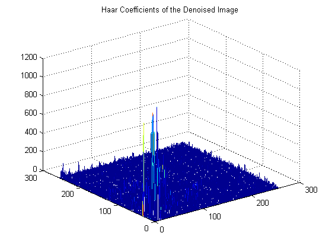
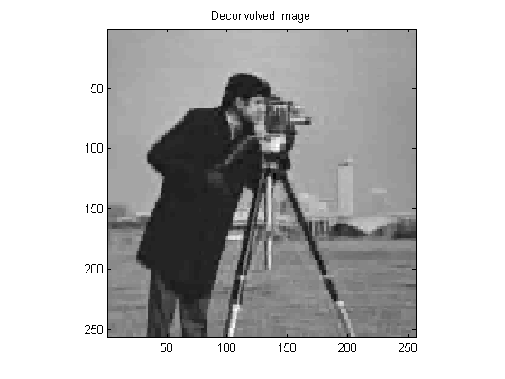

EHB 372E - Week 12: Sparsity Regularization
Contents
Denoising
Suppose we are interested in an image $x$ but observe a noisy version $y = x + n$, where $n$ denotes noise (with possibly unknown statistics). Estimating $x$ from $y$ is called a denoising problem. Below is an example of a noisy image.
x = imread('house.bmp'); % this is the desired image, which is unknown to us x = double(x); sigma = 40; % noise standard deviation y = x + sigma * randn( size(x) ); % this is what we observe figure; imagesc(y); colormap(gray); axis image; title('Noisy Image');
We will make use of the Haar wavelet transform for denoising. Recall that few of the wavelet coefficients of a natural image have high magnitudes and most are close to zero. However, if we were to look at the wavelet coefficients of noise, we would see that the distribution is more uniform. Therefore, the wavelet coefficients of a noisy image contain a noise floor. We can remove a significant portion of the noise energy if we eliminate the coefficients that have low magnitude. Here's a mesh plot of the coefficients of the clean and the noisy images to demonstrate this discussion. Below, the lowpass coefficients are suppressed for better visualization because they are typically very high compared to the rest of the coefficients.
J = 5; % number of wavelet stages cx = HaarDWT( x, J ); cx( 1 : end/2^J, 1 : end/2^J ) = 0; % suppress the lowpass coefficients for mesh plot figure; mesh( abs(cx) ); title('Haar Coefficients of the Clean Image'); cy = HaarDWT( y, J ); cy( 1 : end/2^J, 1 : end/2^J ) = 0; % suppress the lowpass coefficients for mesh plot figure; mesh( abs(cy) ); title('Haar Coefficients of the Noisy Image');

To eliminate the coefficients, we will apply the soft-threshold function. For a given threshold value $\tau$, this function is defined as, $$ S(x,\tau) = \begin{cases} x - \tau & \text{if } \tau < x, \\ 0, &\text{if }|x|< \tau, \\ x+\tau &\text{if }x < -\tau. \end{cases}$$ Let us sketch this function.
tau = 1; % threshold level t = -5:0.01:5; St = max( abs(t) - tau, 0 ) .* sign( t ); figure; plot(t,St); axis image; grid on; title('Soft-Threshold Function');
For today's in-class assignment, you are asked to write a function 'Denoise' that does wavelet-domain soft thresholding. See below for the details.
J = 5; % number of stages to use in the wavelet transform tau = 1.5 * sigma; % the threshold level z = Denoise( y, tau, J );
A threshold value $\tau$ in the range $[\sigma, 3 \sigma]$ usually gives a good reconstruction.
figure; imagesc(z); colormap(gray); axis image; title('Denoised Image'); cz = HaarDWT( z, J ); cz( 1 : end/2^J, 1 : end/2^J ) = 0; % suppress the lowpass coefficients for mesh plot figure; mesh( abs(cz) ); title('Haar Coefficients of the Denoised Image');
Notice that noise is suppressed to an extent but at the expense of some distortion in the image. Specifically, we see a blocky appearance due to the use of the Haar transform.
Estimating $\sigma$ with MAD
In practice, we might not always know the value of the noise standard deviation. To estimate $\sigma$, a useful estimator is the Median Absolute Deviation (MAD). Given a vector $x = [x_1, \ldots, x_n]$, MAD is the median of $|x_i - m|$, where $m$ is the median of $x$. We will employ MAD on the highpass coefficients of the observations to estimate 's'. We also take the median of the data to be 0.
c = cy( end/2 + 1 : end, end/2 + 1 : end); % crop the highpass coefficients
MADs = median( abs( c(:) ) );
MADs / sigma
ans =
0.6809
Deconvolution
Suppose $x$ is an image of interest but we observe $$y = Hx + n,$$ where $H$ is a convolution operator and $n$ denotes noise. That is, we observe a blurred and noisy version of $x$. Our goal is to reconstruct $x$ from $y$. One example is shown below.
x = imread('cameraman.png'); % this is the desired image, which is unknown to us x = double(x); K = 11; h = ones(11,11) / K^2; % blurring kernel sigma = 0.1; % this is the noise variance, assumed to be known y = conv2( x, h, 'same' ) + sigma * randn( size(x) ); % the observation figure; imagesc(y); colormap(gray); axis image; title('Blurred Observation');
Note that if $H$ were invertible, we could estimate $x$ as $$\hat{x} = H^{-1}\,y.$$ However, the operator $H$ is very ill-conditioned for this example. The iterated shrinkage/thresholding algorithm (ISTA) provides a solution for the minimization problem $$ \min_t \frac{1}{2} \| y - H\,W\,t \|_2^2 + \lambda \| t \|_1.$$ Here, $W$ is the inverse Haar DWT function. ISTA is an iterative algorithm. That is, we construct a sequence of wavelet coefficients $t^n$ which converge to the solution of the minimization problem above. Given $t^n$, we obtain $t^{n+1}$ as follows. Note that we use an intermediate image $z^n$. $$z^n := t^n + \alpha^{-1}\,W^T\,H^T\, \Bigl( y - H\,W\,t^n \Bigr)$$ $$t^{n+1} := S(z^n, \alpha^{-1}\,\lambda)$$ Here, $\alpha$ is a step parameter which affects the rate of convergence. Take $\alpha$ to be the sum of the absolute values of the filter coefficients. Notice that the second step is a soft-threshold with threshold equal to $\lambda / \alpha$. After a sufficient number of iterations, we end up with an approximate solution of the minimization problem, $t^*$. To obtain the deblurred image, apply an inverse Haar wavelet transform. Also, you need a $t^0$ to start the iterations. You can set $t^0$ to be the Haar wavelet coefficients of $y$.
The algorithm requires the transpose of the operator $H\,W$. Note that this is given as $W^T\,H^T$. We need the transposes of $W$ and $H$. The transpose of $W$ is equivalent to applying the HaarDWT. The transpose of $H$ is equivalent to applying a space-reversed version of $H$. Here are the ingredients in Matlab :
Realizing $W$:
Remember that $W$ is the inverse Haar DWT function. Suppose $x = W c$. Then, given $c$, we can obtain $x$ as
x = HaarIDWT( c, J ); % J is the number of stages.
Realizing $W^T$:
Since the Haar DWT is an orthonogmal transform, $W^T$ is the Haar DWT function. Suppose $c = W^T x$. Then, given $x$, we can obtain $c$ as
c = HaarDWT( x, J );
Realizing $H$:
Suppose $z = H x$. Then, given $x$, we form $z$ for this experiment as
z = conv2( x, h, 'same' ); % use the filter H given above
Realizing $H^T$:
If $H$ denotes the convolution operator with $h$, $H^T$ corresponds to a convolution with a time reversed version of $h$. Suppose $z = H^T\,x$. Then, given $x$, we form $z$ for this experiment as
ht = h( end:-1:1, end:-1:1 ); % for this experiment, ht = h because the filter is symmetric z = conv2( x, ht, 'same' );
Here's what you should expect to see. Notice that deconvolution does not perfectly give back the original image. Nevertheless, the effect of blur is significantly removed. Observe also the blocky appearance of the deconvolved image. That is due to the use of the Haar DWT.
MAX_ITER = 1000; z = ISTA( y, h, sigma, J, MAX_ITER ); figure; imagesc(z); colormap(gray); axis image; title('Deconvolved Image');
In-Class Assignment
(1) Write a function 'Denoise.m' that takes as input a noisy image and applies a soft-threshold in the Haar wavelet domain. Your function header should look like :
function [z] = Denoise( x, J, tau )
where x is the noisy image, J is the number of stages that the Haar DWT uses and tau is the threshold level. Apply your function to the noisy image shown below. Use MAD to estimate the noise standard deviation $\sigma$ and select a threshold based on your estimate of $\sigma$.
(2) Write a function 'ISTA' that takes as input a blurred image along with the blurring kernel and applies ISTA to return a deconvolved image. Your function header should look like :
function [z] = ISTA( x, h, tau, J, MAX_ITER )
where x is the noisy and blurred image, h is the blurring kernel, tau is the threshold level, J is the number of stages for the Haar DWT, and MAX_ITER is the number of iterations. Display the result you obtain by deconvolving the image below, which is blurred with the kernel h given above in the code.

Here is a short document explaining the derivation of ISTA : [ISTA.pdf]
Ilker Bayram, Istanbul Teknik Universitesi, 2015